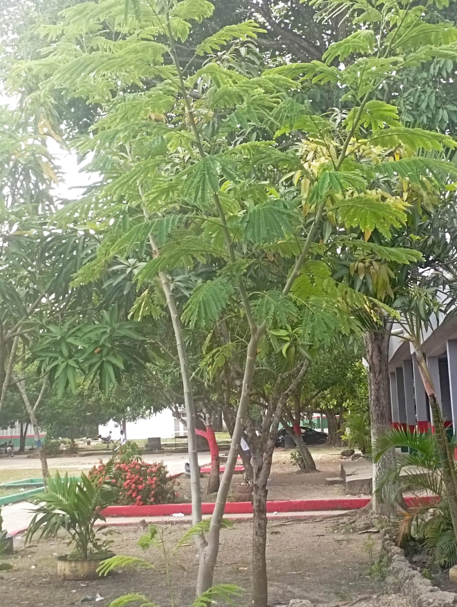

También conocida como Árbol de la Seda
Albizia julibrissin
Es un árbol caducifolio de copa ancha y extendida, con hojas compuestas, finas y plumosas. En verano produce flores llamativas, con largos estambres sedosos que le dan un aspecto esponjoso. Su tronco es delgado y de corteza gris clara.
Requiere climas cálidos y templados para crecer con vigor. Necesita sol directo durante la mayor parte del día y prefiere suelos bien drenados, ligeros y fértiles. Es resistente a la sequía una vez establecida, pero agradece riegos moderados en épocas secas. No tolera suelos encharcados. No necesita mucha poda, solo para formar su estructura y retirar ramas secas.
Se utiliza principalmente como árbol decorativo en jardines, avenidas y parques por su floración atractiva y sombra ligera. Sus flores atraen polinizadores como abejas, mariposas y colibríes. También puede usarse para controlar la erosión gracias a su sistema radicular, y en algunos lugares se valora con fines medicinales por sus propiedades relajantes en la medicina tradicional china.